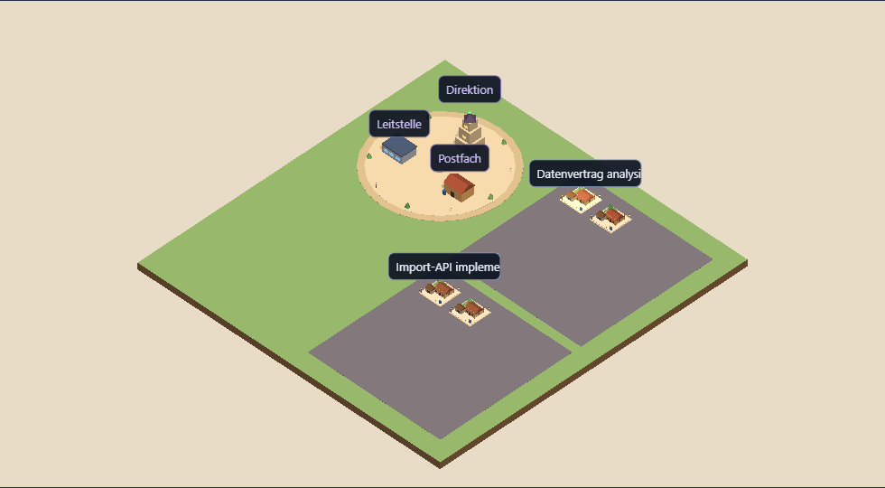

Direktion
ChatGPTAufträge und ErgebnisrückgabeChatGPT erteilt den Auftrag. Hermes koordiniert.
Das passende Werkzeug. Eine gemeinsame Mission.
Claude Code, Codex und Antigravity arbeiten über kontrollierte Ausführungswege. Die 2D-Simulation erklärt den Ablauf. Bereinigte 3D-Aufnahmen zeigen zusätzlich den privaten Originalleitstand.
Ausführungswege
3Claude Code · Codex · AntigravityAktive Aufgaben
0Abgeschlossen
0 / 4Ergebnisbelege im BeispielFür die Direktion
0Gespeichert heißt noch nicht abgerufenMissionen und Abhängigkeiten
Aufgabe auswählen| Mission | Route und Modell | Zustand | Modus |
|---|
Agenten und Modellfamilien
3D-Einblick aus dem Originalleitstand
Statische Aufnahmen mit erfundenen Daten. Der Originalmotor bleibt privat.

Aufnahme eines fiktiven Beispiellaufs. Kein live gerenderter Produktmotor und kein Abbild deiner aktuellen Simulation.
Haus: MissionBeleuchtete Werkstatt: aktiver AuftragPostfach: Ergebnis für die DirektionFarben: Missionszustand
Ergebnispostfach
Zustellschritte bleiben unterscheidbarEreignisse und Entscheidungen
Nur dieser BeispielablaufWas die Demo aus dem Projekt übernimmt
Mehrere Ausführungswege. Claude Code und Codex haben eigene Anbindungen. Antigravity erschließt unter anderem Gemini Flash, Gemini Argon, Claude und GPT-OSS. Die Demo enthält die 13 Antigravity-Identitäten des untersuchten Quellstands.
Begründete Auswahl. Vergleichbare Qualitätsbelege und Gesamtzeit stehen im Vordergrund. Kontingente, Schwierigkeit und ausdrücklich vorgegebene Kandidaten begrenzen die Wahl. Keine behauptete pauschale Überlegenheit eines Anbieters.
Kontrollierte Fortsetzung. Abhängigkeiten, ein Schreiber je Arbeitsbaum und Speicherreserven begrenzen Parallelität. Eine unklare Zustellung wird abgeglichen. Beim Kontingentwechsel wird keine vollständige Gesprächshistorie übertragen.
Vorhandene Dashboards. Die 2D-Demo bildet ausgewählte Regeln vereinfacht nach. Die 3D-Bilder stammen aus synthetischen Läufen des privaten Originalmotors; dessen Code ist hier nicht enthalten. Keine Verbindung zum persönlichen MCP.